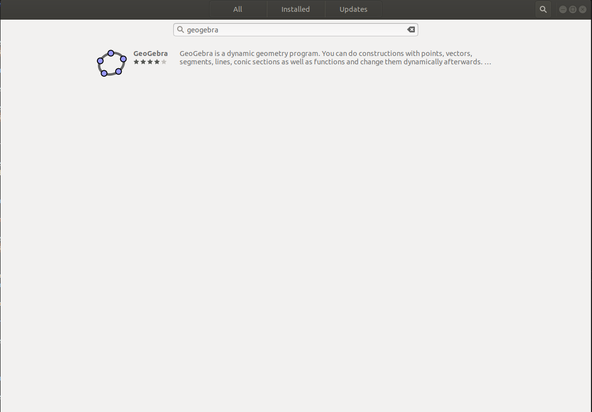
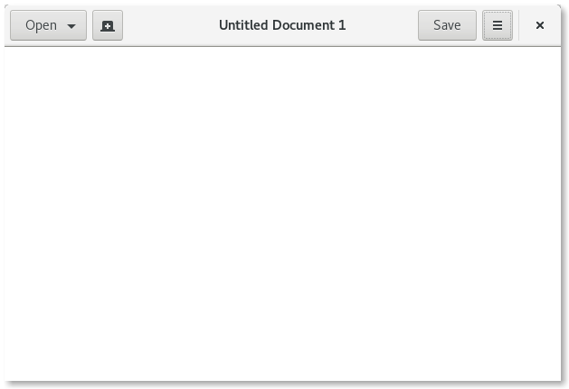

Guia básico de Linux
Com este tutorial vamos guiar você por alguns exercícios práticos usando comandos e apresentando conceitos básicos que vão te ajudar muito no decorrer do curso. Não assumiremos nenhum conhecimento prévio, mas no final esperamos que você se sinta um pouco mais confortável na próxima vez que se deparar com algumas instruções que começam com “Abrir o terminal”.
Dica 1
Caso tenha interesse em aprofundar alguns conceitos sobre o Sistema Operacional Linux, clique aqui.
O que você vai aprender:
- Comandos básicos via terminal do Linux
- Comando bonus para facilitar sua vida
Conhecendo e utilizando o Terminal
O Terminal do Linux é uma ferramenta que facilita a manipulação do sistema, interpretando os comandos do usuário, fazendo a ponte com o hardware do seu computador.
Quando usamos o terminal dentro da interface gráfica do sistema, chamamos de emulador de terminal, pois estamos dentro da interfáce gráfica. Existem diversos emuladores de terminais e também existem diversos tipos de terminais. Então vamos padronizar duas informações a partir deste ponto:
-
Terminal será o nome dado à janela do terminal dentro do ambiente gráfico. No caso do seu SSD será o Terminator.
-
Bash será o único tipo de terminal que usamos.
Existem outros tipos de terminal como o ZSH ou ZShell mas estes são assuntos para outro momento.
Abrindo o terminal
A forma mais facil de abrir o terminal, como já foi visto no tutorial anterior, é atraves do atalho:
Super + T
Neste momento nos deparamos com a janela do terminal aberta no ambiente do usuário (home ou ~) pronta para receber os primeiros comandos:
Comando "apt"
APT é um conjunto de ferramentas usadas pelo Linux para administrar o sistema de forma automática, é possível instalar, atualizar e remover programas e suas dependências via apt;
Atualizar a "lista de pacotes"
Com o comando abaixo, usamos o apt para atualizar todos os programas instalados com essa ferramenta;
sudo apt update
Com o comando abaixo, é possível baixar e instalar a versão mais atual de todos os programas instalados anteriormente via apt;
sudo apt upgrade
Instalar pacotes via apt
Com este comando, usamos o apt para encontrar, baixar e instalar automaticamente o programa no nosso computador;
sudo apt install -y geogebra
Após finalizar a instalação, podemos executar a nova ferramenta, apenas digitando o nome dela no terminal.
geogebra
Remover pacotes via apt
Tambem é possivel desinstalar um programa que foi baixado via apt, basta usar o comando remove, como no exemplo abaixo;
sudo apt remove geogebra
Atualizar pacotes já instalados
Se quiser atualizar um pacote especifico, é possivel determinar o programa a ser atualizado;
sudo apt --only-upgrade install google-chrome-stable
sudo apt --only-upgrade install firefox
Instalar pacotes via Ubuntu Software
Podemos instalar pacotes via Ubuntu Software, basta clicar em Show Applications, no canto inferior direito da tela, e digitar Ubuntu Software na janela de busca;
Agora clique na lupinha e digite o programa que deseja instalar;

Clique no software escolhido, e depois, clique no botão Instalar;

Terminada a instalação, basta clicar no botão Launch para executar o programa, ou Remove para desinstalar;
Navegando entre diretorios e arquivos
O Sistema Linux trabalha com dois elementos principais: Diretórios(pastas) e Arquivos.
- Os arquivos armazenam dados(txt,md,doc...), executam ações (py,jar,bin...)
- Diretórios são as pastas que agrupam os arquivos e organizam o sistema.
{kind=link}
Comando "cd"
O comando cd , vem de Change Directory, ele é um dos comandos mais utilizados no terminal do Linux, isso porque ele permite que acessemos um diretório especifico. Vamos acessar o nosso repositorio de Elementos de Sistemas via terminal, e atualizar ele via comandos git.
Abra um terminal Super + T e execute o comando para entrar na pasta de Elementos de Sistemas:
cd ~/Z01.1
No mesmo terminal, utilize o comando abaixo para garantir que estamos com a ultima versão disponível na branch principal do repositório de Elementos de Sistemas no GitHub:
git pull
Dica 2
É uma boa prática manter os seus repositórios do GitHub sempre atualizados, antes de começar a trabalhar, não esqueça de dar um git pull, para ter certeza de que está trabalhando com a ultima versão dos arquivos no seu repositório!
Feita a atualização, vamos instalar uma ferramenta que permite visualizar toda a estrutaras de árvore da pasta, no terminal que já está aberto, utilize o comando abaixo:
sudo apt install tree
Agora digite o comando para visualizar a árvore do repositório de Elementos de Sistemas:
tree -d -L 4
Esta ferramenta é útil para navegar de forma mais eficiente dentro do sistema, se não sabemos aonde determinado repositório está, é possivel consultar a árvore para localizar o seu caminho visualmente. Veja abaixo como é mostrada a árvore do nosso diretório base do repositório da disciplina:
Os paramentros -d -L 2 indica que que queremos listar (-L )até o quarto (4) nível na hierarquia de pastas, apenas as pastas (-d)
Para listar tudo digite apenas tree.
Na pasta em home, Z01.1 -> Projetos -> B-LogicaCombinacional -> src estão os arquivos .hdl da última aula, vamos dar uma olhada neles.
cd ~
cd Z01.1
cd Exercicios
cd Extras
ou de forma mais ágil, digite:
cd ~/Z01.1/Exercicios/Extras
Dica 3
Utilize a tecla TAB para autocompletar ou sugerir comandos no terminal.
Para acessar o diretório anterior podemos digitar:
cd ..
Comando "pwd"
Podemos verificar o caminho do diretório que estamos digitando:
pwd
Para acessar o diretório home, basta digitar;
cd
Toda vez que abrimos um novo terminal, ele é inicializado na home do usuário.
Comando "ls"
O comando ls é utilizado pra visualizar o conteúdo de um diretório.
ls
Visualização de arquivos e pastas ocultos
O comando "ls" sozinho não exibe arquivos ocultos, que são arquivos e pastas que começam com ".". Talvez, em algum momento será necessário atualizar ou modificar as variáveis de ambiente, para isso, teremos que editar um arquivo oculto chamado ".bashrc", no momento precisamos apenas saber que este arquivo se encontra na home do usuario ~ e que após editado precisamos executar o source ~/.bashrc ou feche o terminal e abra um novo para recarregar as atualizações do arquivo.
cd ~
ls -a
ou para listar informações mais detalhadas:
ls -la
ou simplismente:
ll
cd ~
code .bashrc
source .bashrc
Comando "mkdir"
Para criar um novo diretório no ambiente em que você está, basta digitar o comando a seguir;
mkdir ~/Documents/nome_da_pasta/nome_da_pasta
Para criar um novo diretório em um local especifico, basta especificar o caminho que o diretório deverá ser criado;
Dica 4
Relembrando, Você sempre pode usar a tecla TAB para auto-completar os comandos.
mkdir /home/borg/Documents/nome_da_pasta
ou
mkdir ~/Documents/nome_da_pasta
Comando "touch"
O comando touch cria arquivos vazios, na extensão que você definir;
touch /home/borg/Documents/nome_da_pasta/teste.py
touch /home/borg/Documents/nome_da_pasta/testando_outra_extensao.txt
O comando > funciona exatamente como o touch:
> /home/borg/Documents/nome_da_pasta/outro_teste.py
> /home/borg/Documents/nome_da_pasta/mais_um_teste.txt
Se você tentar abrir um arquivo que não existe, usando um editor de texto pelo terminal, o sistema cria o arquivo pra você, observe;
nano /home/borg/Documents/nome_da_pasta/usando_o_nano.py
code /home/borg/Documents/nome_da_pasta/usando_o_vscode.md
gedit /home/borg/Documents/nome_da_pasta/o_bloco_de_notas.txt
Comando "cp"
Para copiar arquivos e diretorios, basta digitar:
> /home/borg/Documents/nome_da_pasta/meu_programa_python.py
cp -R /home/borg/Documents/nome_da_pasta/meu_programa_python.py /home/borg/Documents/
No exemplo acima foi criado um arquivo chamado meu_programa_python.py e uma copia do arquivo "meu_programa_python.py" dentro do diretório Documents.
Comando "mv"
Para mover arquivos e diretorios, o famoso Ctrl + X - Ctrl + V, basta digitar:
mv /home/borg/Documents/nome_da_pasta/testando_outra_extensao.txt /home/borg/Documents/
No exemplo acima o arquivo "testando_outra_extensao.txt" foi movido para dentro do diretório Documents (recortado e colado).
O comando mv tambem serve tanto para mover, com para renomear arquivos e diretorios:
mkdir /home/borg/Documents/nome_da_pasta/pastinha
mv /home/borg/Documents/nome_da_pasta/pastinha /home/borg/Documents/nome_da_pasta/nova_pastinha
Atenção
Cuidado para não sobrescrever arquivos e pastas impoortantes na hora de executar estes comandos.
Comando "rm"
Para excluir arquivos e diretórios, o famoso Shift + Del basta digitar:
rm -rf /home/borg/Documents/nome_da_pasta/nova_pastinha
Atenção
Arquivos e pastas são apagados permanentemente, não vão para lixeira. No caso de diretórios, apaga o diretório e tudo que está dentro dele, use o comando com sabedoria.
Super Usuário
Comando "sudo"
Por questões de seguraça, o Linux trabalha com permissões de usuários e para determinados arquivos ou comandos apenas o usuario administrador (root) pode executar. A titulo de curiosidade, "sudo" significa S**uper **U**ser **DO. Quando executar comandos com sudo, será necessário informar a senha.
Comando "chmod"
Chmod vem de change mode -> mode é o nome do campo que guarda as permissões de um arquivo. As permissões servem para determinar se um usuario ou grupo terá permissões para ler, gravar, executar. Existem diversas configurações possiveis e a que mais utilizamos dá a permissão de execução a um código qualquer, como um python, por exemplo;
touch /home/borg/Documents/nome_da_pasta/teste.py
chmod a+x /home/borg/Documents/nome_da_pasta/teste.py
A concatenação de a+x significa que estamos permitindo para todos (a = all) usuários e grupos executem (x = execution) o teste.py
Editando arquivos
Existem várias ferramentas para edição de texto, de um modo geral, podemos dizer que existem 2 grupos principais, os que rodam direto no console (terminal) e os que possuem uma interface gráfica.
Editor nano
O nano é um editor do modo console, ou seja, abre no proprio terminal.

Abrir
Digite no terminal nano e o nome do arquivo com a extensão, caso não exista um arquivo com esse nome um novo arquivo será criado.
nano /home/borg/Documents/nome_da_pasta/nano.md
nano /home/borg/Documents/nome_da_pasta/nano.txt
Localizar palavra
Para fazer uma busca no texto pressione Ctrl + W, digite a palavra e aperte Enter.
Salvar e Sair
Para salvar, precione Ctrl + S. Para sair Ctrl + X. Para sair sem salvar alteraçes, Ctrl + X e N.
Editor gedit
Muito parecido com o famoso bloco de notas do Windows.

Abrir
Digite no terminal gedit e o nome do arquivo com a extensão, caso não exista um arquivo com esse nome um novo arquivo será criado.
gedit /home/borg/Documents/nome_da_pasta/roda_tartaruga.py
gedit /home/borg/Documents/nome_da_pasta/roda_tartaruga.md
Localizar palavra
Para fazer uma busca no texto pressione Ctrl + F, digite a palavra e tecle Enter.
Salvar e Sair
Para salvar e sair, pressione Ctrl + S ou clique em salvar para salvar e para sair Alt + F4.
Editor vscode
O editor vscode é uma ferramenta que possui mais recursos que auxiliam no desenvimento de codigo.
Abrir
Digite no terminal code e o nome do arquivo com a extensão, caso não exista um arquivo com esse nome um novo arquivo será criado.
code /home/borg/Documents/nome_da_pasta/roda_tartaruga.py
Uma forma bastante eficiente de trabalho é abrir um diretório no vscode ao invés de um arquivo.
Vamos experimentar abrir o diretório um dos diretórios de trabalho de robótica.
Utilize seus conhecimentos adquiridos neste tutorial e entre no diterório my_simulation, que pode ser visto na imagem a seguir:

Se você conseguiu entender a visualização acima, entrou no seguinte diretório:
Agora vamos abrir o vscode com toda a pasta de trabalho, usando a pasta onde estamos:
code .
Agora é só clicar em Yes, I trust the authors e você verá ao lado esquerdo que todos os arquivos deste diretório estão disponíveis para visualização/edição.
Localizar palavra
Para fazer uma busca no texto pressione Ctrl + F, digite a palavra e tecle Enter.
Salvar e Sair
Para salvar e sair, pressione Ctrl + S ou clique em salvar para salvar e para sair Alt + F4
BONUS
Comandos úteis para verificar informações do sistema, encontrar bugs, e encerrar programas travados;
Informações dos dispositivos conectados na USB
Se você não tem certeza se o dispositivo conectado a sua porta USB foi reconhecido, use este comando e verifique o log do sistema;
lsusb
Informações dos dispositivos conectados na PCI
Se você não tem certeza se o dispositivo conectado a sua porta PCI foi reconhecido, use este comando e verifique o log do sistema;
lspci
O programa travou, e agora?
Para destravar uma tela, use "xkill" e clique na tela com o mouse.
xkill
Para emcerrar um processo, digite o comando abaixo, e o nome do software que deseja parar;
pkill terminal
Procurar um comando já utilizado no terminal
Você quer usar quele mesmo comando enorme que já usou antes? Você pode usar o comando CTRL + R no seu terminal, então digitar uma parte do comando que você queria. Veja no exemplo abaixo, onde há a busca de um comando que tem a palavar "disk" no meio:
Após esta pesquisa e teclar ENTER o comando "antigo" é executado:
Mudando o tamnanho da fonte do terminal
Em alguns casos há a vontade de alterar o tamanho da fonte do terminal. Este processo é bastante simples. Basta clicar com o botão direito em uma área livre do terminal e clicar em Preferences:
Na tela que abrir, clique em Profiles e em seguida retire o "check" da caixa Use the system fixed width font. Então clique na caixa Font e altere tanto a fonte quanto o seu tamanho.
Dica 5
Lembre-se que usamos um utilitário chamado oh-my-bash, que nos ajuda muito a navegar em pastas com repositórios git. Porém algumas fontes não têm os caracteres especiais necessários. Estamos usando a Fonte: Cousine for Powerline Regular 12 mas você pode experimentar outras fontes e tamanhos para ver o que mais lhe agrada.
Instalando e usando o HTOP
Outra aplicação bastante útil é o htop. Ele não vem instalado por padrão, mas é facilmente instlado com o apt.
Para instalar o htop vamos usar o seguinte comando:
sudo apt install htop
Após a instalação, digite o comando htop e você poderá ver o quanto está sendo usado de memória RAM, de Procesamento e os processos que estão rodando (junto de outras informações):
Para sair, basta apertar a tecla q
Espero que você esteja se sentindo mais confortável para explorar e personalizar o seu Ubuntu, divirta-se!
Fontes:
Linux: conheça o Linux OS O que é open source? Código Aberto e Software Livre não significam a mesma coisa! The Linux command line for beginners Oh-My-Bash